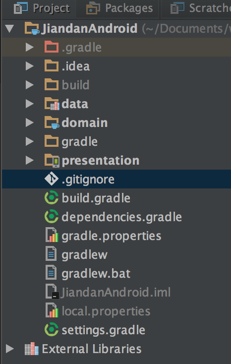

本节主要介绍了 app 的 gradle 的构建

settings.gradle
首先看看整个项目的结构，整个项目被分成了三个部分。presentation、domain、data
所以在 Project Setting 的 gradle 要做的事就是把这三个 module 包进来
include ':presentation', ':data', ':domain'
Project : buildl.gradle
整个工程的全局定义，把 versionCode 、versionName等全局定义了，在后续的其他的 gradle 中会用到
allprojects {
repositories {
jcenter()
}
ext {
androidApplicationId = 'io.github.xuyushi.jiandan.presentation'
androidVersionCode = 1
androidVersionName = "1.0"
}
}
dependencies.gradle
项目中一般都会引用很多第三方库 ，为了方便修改这些第三方库的依赖，把这些库和库的版本号全部定义在dependencies.gradle中，在需要引用的 gradle 的文件中 apply from: 'dependencies.gradle'即可
在 dependence.gradle 也对三个不同的包做了管理
presentationDependencies = [
daggerCompiler: "com.google.dagger:dagger-compiler:${daggerVersion}",
dagger: "com.google.dagger:dagger:${daggerVersion}",
butterKnife: "com.jakewharton:butterknife:${butterKnifeVersion}",
recyclerView: "com.android.support:recyclerview-v7:${recyclerViewVersion}",
rxJava: "io.reactivex:rxjava:${rxJavaVersion}",
rxAndroid: "io.reactivex:rxandroid:${rxAndroidVersion}",
javaxAnnotation: "javax.annotation:jsr250-api:${javaxAnnotationVersion}",
glide: "com.github.bumptech.glide:glide:${glideVersion}",
logger: "com.orhanobut:logger:${loggerVersion}",
appcompatV7: "com.android.support:appcompat-v7:${appcompatV7}",
design: "com.android.support:design:${design}"
]
domainDependencies = [
daggerCompiler: "com.google.dagger:dagger-compiler:${daggerVersion}",
dagger: "com.google.dagger:dagger:${daggerVersion}",
javaxAnnotation: "javax.annotation:jsr250-api:${javaxAnnotationVersion}",
rxJava: "io.reactivex:rxjava:${rxJavaVersion}",
logger: "com.orhanobut:logger:${loggerVersion}"
]
dataDependencies = [
daggerCompiler: "com.google.dagger:dagger-compiler:${daggerVersion}",
dagger: "com.google.dagger:dagger:${daggerVersion}",
okHttp: "com.squareup.okhttp:okhttp:${okHttpVersion}",
gson: "com.google.code.gson:gson:${gsonVersion}",
rxJava: "io.reactivex:rxjava:${rxJavaVersion}",
rxAndroid: "io.reactivex:rxandroid:${rxAndroidVersion}",
javaxAnnotation: "javax.annotation:jsr250-api:${javaxAnnotationVersion}",
androidAnnotations: "com.android.support:support-annotations:${androidAnnotationsVersion}",
logger: "com.orhanobut:logger:${loggerVersion}",
sugar: "com.github.satyan:sugar:${sugarVersion}",
retrofit: "com.squareup.retrofit2:retrofit:${retrofitVersion}",
retrofitConvertGson:"com.squareup.retrofit2:converter-gson:${retrofitVersion}",
retrofitAdapter: "com.squareup.retrofit2:adapter-rxjava:${retrofitVersion}"
]
版本号也做了统一的管理
//Android
androidBuildToolsVersion = "23.0.3"
androidMinSdkVersion = 15
androidTargetSdkVersion = 23
androidCompileSdkVersion = 23
//Libraries
daggerVersion = '2.0.2'
butterKnifeVersion = '7.0.1'
recyclerViewVersion = '21.0.3'
rxJavaVersion = '1.0.14'
rxAndroidVersion = '1.0.1'
javaxAnnotationVersion = '1.0'
gsonVersion = '2.3'
okHttpVersion = '2.5.0'
androidAnnotationsVersion = '21.0.3'
retrofitVersion = '2.1.0'
loggerVersion = '1.14'
glideVersion = '3.7.0'
sugarVersion = '1.4'
appcompatV7 = '23.4.0'
design = '23.4.0'
presentation
这个是要编译成 apk 的，所以首行必然是 apply plugin: 'com.android.application'
android {
def globalConfiguration = rootProject.extensions.getByName("ext")
compileSdkVersion globalConfiguration.getAt("androidCompileSdkVersion")
buildToolsVersion globalConfiguration.getAt("androidBuildToolsVersion")
defaultConfig {
minSdkVersion globalConfiguration.getAt("androidMinSdkVersion")
targetSdkVersion globalConfiguration.getAt("androidTargetSdkVersion")
applicationId globalConfiguration.getAt("androidApplicationId")
versionCode globalConfiguration.getAt("androidVersionCode")
versionName globalConfiguration.getAt("androidVersionName")
multiDexEnabled true
}
buildTypes {
release {
minifyEnabled false
proguardFiles getDefaultProguardFile('proguard-android.txt'), 'proguard-rules.pro'
}
}
//支持lint warning 检查机制
lintOptions {
disable 'InvalidPackage'
}
packagingOptions {
exclude 'LICENSE.txt'
exclude 'META-INF/DEPENDENCIES'
exclude 'META-INF/ASL2.0'
exclude 'META-INF/NOTICE'
exclude 'META-INF/LICENSE'
}
}
dependencies {
def presentationDependencies = rootProject.ext.presentationDependencies
compile fileTree(dir: 'libs', include: ['*.jar'])
compile project(':data')
compile project(':domain')
apt presentationDependencies.daggerCompiler
compile presentationDependencies.dagger
compile presentationDependencies.butterKnife
compile presentationDependencies.recyclerView
compile presentationDependencies.rxJava
compile presentationDependencies.rxAndroid
provided presentationDependencies.javaxAnnotation
compile presentationDependencies.glide
compile presentationDependencies.logger
compile presentationDependencies.design
compile presentationDependencies.appcompatV7
}
可以看到在dependencies中，直接读出了 dependencies.gradle中的设置，
data
data Module 同上。不同的 data Module 是作为一个 Android library 的，所以首行因为
apply plugin: 'com.android.library'
domain
domain 比较特殊，它是一个纯 java 的 module，完全独立于其他两个层，通过接口与另外两个层联系
apply plugin: 'java'
sourceCompatibility = 1.7
targetCompatibility = 1.7
configurations {
provided
}
sourceSets {
main {
compileClasspath += configurations.provided
}
}
dependencies {
def domainDependencies = rootProject.ext.domainDependencies
compile fileTree(dir: 'libs', include: ['*.jar'])
provided domainDependencies.daggerCompiler
provided domainDependencies.javaxAnnotation
compile domainDependencies.dagger
compile domainDependencies.rxJava
}